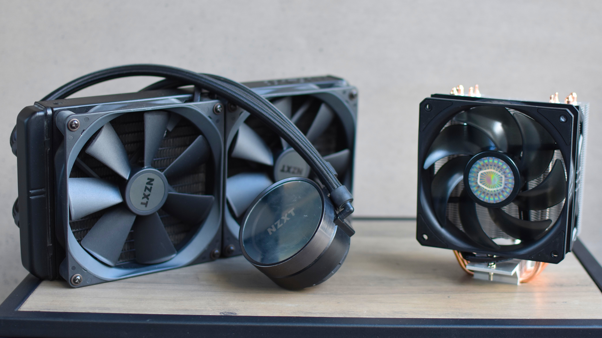

CPU Cooling for Beginners: Air vs. Liquid
Written by: The PC Parts Guide Team
March 2026 • 7 min read
Your CPU generates a LOT of heat. If you don't cool it properly, it will slow itself down to avoid melting — or worse, it could get permanently damaged. Picking the right cooler is one of the most important decisions in any PC build.
Why Does Cooling Matter?
Think of your CPU like a car engine. A car engine generates heat when it runs, and it needs a cooling system (radiator + coolant) to stay at a safe temperature. Without it, the engine overheats and shuts down.
Your CPU does the same thing. When it gets too hot, it thermal throttles — which means it purposely slows itself down to avoid damage. So even if you have a fast CPU, a bad cooler means you never get the full speed you paid for.

The Two Types of CPU Coolers
Air Coolers
Air coolers work exactly like they sound — they use metal fins and a fan to blow hot air away from your CPU. The metal fins (called a heatsink) absorb the heat, and the fan blows it out of the way.
Think of it like a handheld electric fan on a hot day. It's simple, reliable, and works great.
- Cheaper (₱500 – ₱7,000)
- Very reliable — no moving liquids means less chance of failure
- Easy to install
- No maintenance needed
- Can be very tall and bulky — may not fit in small cases
- Less effective for high-end CPUs like the i9 or Ryzen 9
| Air Cooler Tier | Example | Price Range | Best For |
|---|---|---|---|
| Stock / Basic | AMD Wraith Stealth (Boxed) | Free (bundled) | Budget CPUs, light use |
| Budget Tower | Cooler Master Hyper 212 | ₱1,500 – ₱2,500 | Mid-range gaming CPUs |
| Mid-Range Tower | Deepcool AK400 | ₱2,000 – ₱3,000 | Ryzen 5 / i5 builds |
| High-End Tower | Noctua NH-D15 | ₱6,000 – ₱8,000 | Ryzen 9 / i9, max performance |
Liquid Coolers (AIO)
AIO stands for All-In-One liquid cooler. Instead of blowing hot air away directly, it pumps liquid through tubes to carry the heat from the CPU to a radiator (like a mini car radiator), where fans cool it down.
Think of it like an air conditioning unit. It moves the heat from inside to outside more efficiently than a fan alone.
- Keeps CPUs much cooler under heavy load
- Looks amazing — great RGB options
- Great for high-TDP CPUs (125W+)
- CPU area stays cleaner and less cluttered
- More expensive (₱3,000 – ₱12,000)
- Slightly more complex to install
- Small chance of pump failure or leaking over time
- Needs a case with space for a radiator (120mm, 240mm, 360mm)
| AIO Size | Radiator | Example | Price Range | Best For |
|---|---|---|---|---|
| Small | 120mm (1 fan) | Cooler Master ML120L | ₱2,500 – ₱4,000 | Budget, low-TDP CPUs |
| Standard | 240mm (2 fans) | Corsair H100i | ₱5,000 – ₱8,000 | Mid-range gaming, streaming |
| Large | 360mm (3 fans) | NZXT Kraken X73 | ₱8,000 – ₱14,000 | High-end CPUs, overclocking |
So... Air or Liquid?
| Air Cooler | AIO Liquid Cooler | |
|---|---|---|
| Price | ₱500 – ₱7,000 | ₱2,500 – ₱14,000 |
| Performance | Good to Excellent | Excellent |
| Reliability | Very High | High |
| Looks | Functional | Stylish / RGB |
| Noise | Moderate | Quieter (at same temps) |
| Best For | Budget to mid-range builds | Mid to high-end builds |
• CPU TDP under 65W → Stock cooler or basic air is fine
• CPU TDP 65W–125W → Mid-range air cooler (like Hyper 212)
• CPU TDP 125W+ → High-end air cooler OR 240mm+ AIO
What About Case Fans?
Your CPU cooler only handles the CPU. The rest of your components — GPU, motherboard, RAM — also generate heat. That's where case fans come in. They push cool air in and push hot air out of your entire case.
- Intake fans (front/bottom): Pull cool air IN
- Exhaust fans (rear/top): Push hot air OUT
A good rule of thumb: have more intake than exhaust (positive air pressure) to keep dust from sneaking through gaps.
The Importance of Thermal Paste
Thermal paste is a grey, toothpaste-like substance that goes between your CPU and your cooler. It fills in microscopic gaps between the two surfaces to transfer heat more efficiently.
Most coolers come with thermal paste pre-applied. If yours doesn't, or you're reinstalling an old cooler, apply a small pea-sized dot in the center of the CPU — the cooler will spread it evenly when you press it down.
• Cooling prevents your CPU from overheating and slowing down
• Air coolers = Simple, reliable, affordable
• AIO Liquid = Better cooling, better looks, costs more
• Match your cooler to your CPU's TDP
• Add case fans for better overall airflow
• A pea-sized dot of thermal paste is all you need!